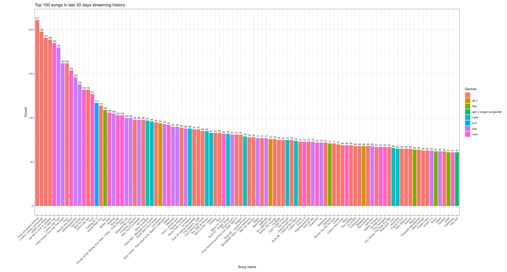
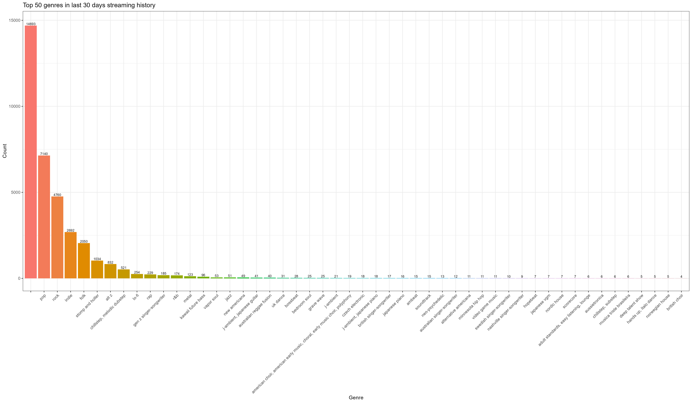
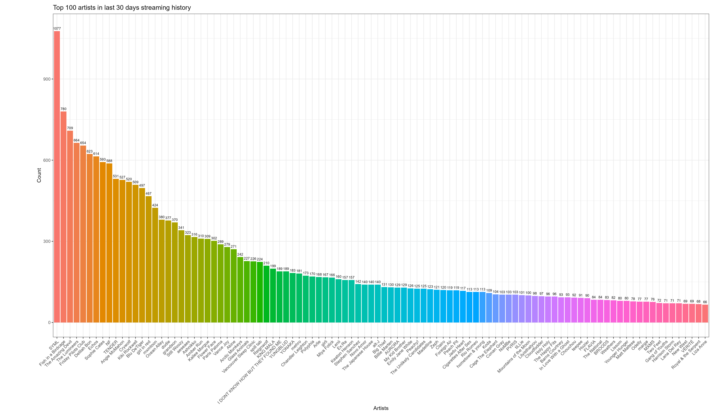
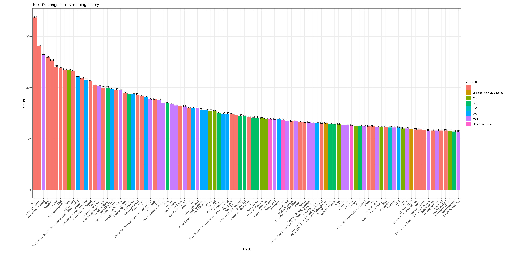
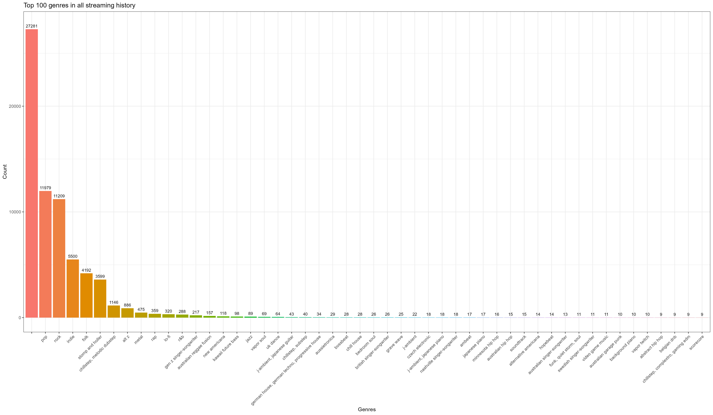
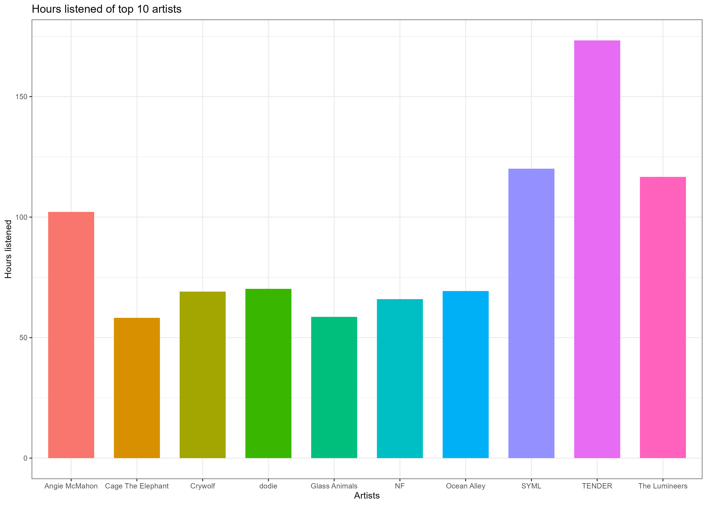

Set up
I once got asked what music did I like. An admittedly, common small talk question that definitely has popped up more than once in life. But like every other time it’s been asked, I’ve never known how to answer it. So hey, why not interrogate Spotify to see some answers? Here, I’ve included the code and steps needed to get similar outputs to what I have here.
You’ll have to first request your data from Spotify. To do this… Note that your extended streaming history may take a week or more to come.
Once downloaded, you’ll want to set up a unique API that links to your account. Basically giving you a way to access their database. To do that you need to make a Spotify Developer account, that will let you set up a project that will have your ‘Client_ID’ and your ‘Client_Secret’.
# Setting up API tokens
Sys.setenv (SPOTIFY_CLIENT_ID = 'xxx')
Sys.setenv (SPOTIFY_CLIENT_SECRET = 'xxx')Next, we want to load in some libraries, feel free to download these if you’ve yet to do so.
# Loading in libraries
library (jsonlite)
library (spotifyr)
library (tidyverse)Then load in your API tokens that you’ve set up in your system environment above.
access_token <- get_spotify_access_token()The data you get from R comes in two sets (if you’ve requested both files). The first set is just your streaming history from your last 30 days and the second is your extended streaming history. This first section below will go through the former file.
Last 30 days of streaming
Read in the streaming histories and concatenate it all into one long list
## Read in streaming histories
str_hist0 <- read_json ("./MyData/StreamingHistory0.json")
str_hist1 <- read_json ("./MyData/StreamingHistory1.json")
str_hist2 <- read_json ("./MyData/StreamingHistory2.json")
str_hist3 <- read_json ("./MyData/StreamingHistory3.json")
## Concatenate
str_hist_all <- append (str_hist0, str_hist1)
str_hist_all <- append (str_hist_all, str_hist2)
str_hist_all <- append (str_hist_all, str_hist3)Once done, collapse it into a dataframe so it’s more user friendly
## Convert to dataframe of tracknames, dates and artist
str_hist_all_trkdate = NULL
for (i in 1:length (str_hist_all)) {
track <- str_hist_all[[i]][["trackName"]]
date <- str_hist_all[[i]][["endTime"]]
artist <- str_hist_all[[i]][["artistName"]]
str_hist_all_trkdate <- as.data.frame (rbind (str_hist_all_trkdate, cbind (track, date, artist)))
}
str_hist_all_trkdate <- unique (str_hist_all_trkdate)To access their database, Spotify uses Unique IDs (UID). This ID isn’t stored in the dataset they give you, and instead you would have to search it up. Luckily the package ‘spotifyr’ makes this whole ordeal somewhat less painful. Here, I’m searching it up by Artist ID as Spotify appends genres to the artist rather than the song.
## Get UID of artists
str_hist_all_artists <- unique (str_hist_all_trkdate$artist)
### The below tries different methods to extract the UID per artist. The final output is a dataframe that links artists to their UID. If no UID is found for the artists, they are likely a podcast/show.
artist_list = NULL
for (i in 1:lartist_list = NULL
for (i in 1:length (str_hist_all_artists)){
print (paste ("Running", i, "out of", length(str_hist_all_artists)))
if (exists ("artist")) {remove (artist)}
if (exists ("artist_ID")) {remove (artist_ID)}
artist_info = NA
artist <- str_hist_all_artists[i]
artist_search <- search_spotify (artist, type = "artist")
if ( nrow (artist_search) != 0 ) {for (j in 1:nrow (artist_search)) {
if (artist_search[j,5] == artist) {
artist_ID <- as.character (artist_search[j,3])}}}
if (exists ("artist_ID") == TRUE) {
if (tryCatch ({get_artist (artist_ID)$name == artist}, error = function(e) {FALSE})){
artist_list <- as.data.frame (rbind (artist_list, cbind (artist, artist_ID)))
} else {
artist_ID = NA
artist_list <- as.data.frame (rbind (artist_list, cbind (artist, artist_ID)))}}
if (exists ("artist_ID") == FALSE) {
tryCatch({
artist_info <- get_artist_audio_features (artist)
}, error = function(e) {
artist_info <- get_artist_audio_features (artist, include_groups = "single")
}, error = function(e2) {artist_info = NA})
if (exists ("artist_info") == TRUE) {
artist_ID <- tryCatch (artist_info$artist_id[1], error = function(e) {
artist_info$artist_id[2]
}, error = function(e2) {
if (!exists ("artist_ID")) {artist_ID <- NA}})}
if (exists ("artist_ID") == TRUE) {
if (tryCatch ({get_artist (artist_ID)$name == artist}, error = function(e) {FALSE})){
artist_list <- as.data.frame (rbind (artist_list, cbind (artist, artist_ID)))
} else {
artist_ID = NA
artist_list <- as.data.frame (rbind (artist_list, cbind (artist, artist_ID)))}}}}Now with the artist IDs we can search up their genres and join them into our dataset
## Get genres of artists
artist_list_filt <- artist_list %>% filter (!is.na (artist_ID)) # Removing shows/episodes
artist_genre = NULL
genre_list = NULL
for (id in 1:nrow (artist_list_filt)){
print (paste ("Running", id, "out of", nrow (artist_list_filt)))
artist_ID <- artist_list_filt[id,2]
info <- get_artist (artist_ID)
genres <- info$genres
genres_concat <- paste (info$genres, collapse=', ')
genre_list <- append (genre_list, genres)
artist_genre <- as.data.frame (rbind (artist_genre, cbind (artist_ID, genres_concat)))
}
genre_list <- unlist (genre_list)
artist_list_filt_genre <- left_join (artist_list_filt, artist_genre)It is an understatement to say that there are a lot of miscellaneous genres in Spotify. For example, each tiny sliver in this pie chart below represent a single genre.
## Merging artist UID to track list
str_hist_artists <- left_join (str_hist_all_trkdate, artist_list_filt_genre, by = 'artist')
## There are way too many genres in Spotify... here's how many
genre_df <- as.data.frame (genre_list)
genre_summ <- genre_df %>% group_by (genre_list) %>% summarise (n = n())
top_10_genre_summ <- genre_summ %>% # Gathering the top 10 genres
arrange (desc(n)) %>%
head (10)
ggplot (genre_summ, aes (x = "", y = n, fill = genre_list)) +
geom_bar (stat = "identity", width = 0.01, color = "white") +
coord_polar ("y", start = 0,) +
theme_void () +
theme (legend.position = "none") +
labs (title = "Number of occurrences of each genre", caption = "Theres 379 genres in just my streaming history of the last 30 days") +
theme (text = element_text (size = 50), plot.title = element_text (hjust = 0.5))
So to properly investigate genres I’ve chosen to merge a few of the genres together. The order of the merging may lead to bias (e.g., indie pop), but what can yah do.
str_hist_artists_genre_merge <- as.data.frame (unique (str_hist_artists$genres))
merge_list = NULL
for (i in 1:nrow (str_hist_artists_genre_merge)) {
merge = str_hist_artists_genre_merge[i,1]
if(grepl ("alt z", str_hist_artists_genre_merge[i,1], ignore.case = TRUE)) {merge = "alt z"}
if(grepl ("indie", str_hist_artists_genre_merge[i,1], ignore.case = TRUE)) {merge = "indie"}
if(grepl ("pop", str_hist_artists_genre_merge[i,1], ignore.case = TRUE)) {merge = "pop"}
if(grepl ("folk", str_hist_artists_genre_merge[i,1], ignore.case = TRUE)) {merge = "folk"}
if(grepl ("rock", str_hist_artists_genre_merge[i,1], ignore.case = TRUE)) {merge = "rock"}
if(grepl ("rap", str_hist_artists_genre_merge[i,1], ignore.case = TRUE)) {merge = "rap"}
if(grepl ("jazz", str_hist_artists_genre_merge[i,1], ignore.case = TRUE)) {merge = "jazz"}
if(grepl ("metal", str_hist_artists_genre_merge[i,1], ignore.case = TRUE)) {merge = "metal"}
if(grepl ("lo-fi", str_hist_artists_genre_merge[i,1], ignore.case = TRUE)) {merge = "lo-fi"}
if(grepl ("r&b", str_hist_artists_genre_merge[i,1], ignore.case = TRUE)) {merge = "r&b"}
if(grepl ("stomp and holler", str_hist_artists_genre_merge[i,1], ignore.case = TRUE)) {merge = "stomp and holler"}
merge_list <- append (merge_list, merge)
}
merge_dict <- cbind (str_hist_artists_genre_merge[1], merge_list)
colnames (merge_dict)[1] <- "genres_concat"
## Merging genres by original genre name
str_hist_artists_merged <- left_join (str_hist_artists, merge_dict, by = "genres_concat")Now let’s look at some plots!
Top 100 songs
What are the top 100 songs in my streaming history of the last 30 days?
First we make a frequency table to find how many time each song was played. This lets me find the top 100 which I can use to generate the plot
## Frequency table and plot
track_freq <- str_hist_artists_merged %>% filter (!is.na (artist_ID)) %>% group_by (track) %>% summarise (n = n())
artists_merged_info <- str_hist_artists_merged %>% filter (!is.na (artist_ID)) %>% select (track, artist, artist_ID, merge_list)
track_freq_merged <- left_join (track_freq, artists_merged_info, by = "track", multiple = "first")
track_freq_sort <- track_freq_merged[order (track_freq_merged$n, decreasing = TRUE), ]
track_freq_top100 <- track_freq_sort[1:100,] # Top 100
track_freq_top100$track <- factor (track_freq_top100$track, levels = track_freq_sort$track) # Converting to factor to preserve order
ggplot (track_freq_top100, aes(x = track, y = n, fill = merge_list)) +
geom_bar (stat = "identity") +
geom_text (aes (label = n), size = 2.5, nudge_y = 2) +
theme (axis.text.x = element_text(angle = 45, hjust = 1)) +
labs (title = "Top 100 songs in last 30 days streaming history", y = "Count", fill = "Genres", x = "Song name")P.S. Click on the image to zoom in!

Top genres
Repeating a similar analysis but with my genres now
genre_freq <- artists_merged_info %>% group_by (merge_list) %>% summarise (n = n())
genre_freq_sort <- genre_freq [order (genre_freq$n, decreasing = TRUE), ]
genre_freq_sort <- genre_freq_sort [1:50, ]
genre_freq_sort$merge_list <- factor (genre_freq_sort$merge_list, levels = genre_freq_sort$merge_list) # Converting to factor to preserve order
ggplot (genre_freq_sort, aes (x = merge_list, y = n, fill = merge_list)) +
geom_bar (stat = "identity") +
geom_text (aes (label = n), size = 2.5, nudge_y = 100) +
theme (axis.text.x = element_text(angle = 45, hjust = 1), legend.position = "none") +
labs (title = "Top 50 genres in last 30 days streaming history", y = "Count", x = "Genre")
Top artists
And my top 100 artists…
artist_freq <- artists_merged_info %>% group_by (artist) %>% summarise (n=n())
artist_freq_sort <- artist_freq [order (artist_freq$n, decreasing = TRUE), ]
artist_freq_sort_top100 <- artist_freq_sort [1:100,] # Top 100
artist_freq_sort_top100$artist <- factor (artist_freq_sort_top100$artist, levels = artist_freq_sort_top100$artist) # Converting to factor to preserve order
ggplot (artist_freq_sort_top100, aes(x = artist, y = n, fill = artist)) +
geom_bar (stat = "identity") +
geom_text (aes (label = n), size = 2.5, nudge_y = 10) +
theme (axis.text.x = element_text(angle = 45, hjust = 1), legend.position = "none") +
labs (title = "Top 100 artists in last 30 days streaming history", x = "Artists", y = "Count")
All time streaming
Now some may think that’s good enough to fill in the blank spot of when someone asks me “What’s your favourite song”. But what if they ask me “What’s your favourite song of all time”. Well, I guess the best I got for them is analysing my whole Spotify streaming history. Sorry kind person but that’s the best you’ll get out of me. I guess they’ll never be able to find out about my Britney addiction I had in primary school…
The set up and workflow is very similar to the one above. First we load in the data, append it all together, then collapse it.
# Processing the full streaming history
extended_str_hist0 <- read_json ("./MyData/Streaming_History_Audio_2020-2021_0.json")
extended_str_hist1 <- read_json ("./MyData/Streaming_History_Audio_2021-2022_1.json")
extended_str_hist2 <- read_json ("./MyData/Streaming_History_Audio_2022_2.json")
extended_str_hist3 <- read_json ("./MyData/Streaming_History_Audio_2022-2023_3.json")
extended_str_hist4 <- read_json ("./MyData/Streaming_History_Audio_2023_4.json")
extended_str_hist_all <- append (extended_str_hist0, extended_str_hist1)
extended_str_hist_all <- append (extended_str_hist_all, extended_str_hist2)
extended_str_hist_all <- append (extended_str_hist_all, extended_str_hist3)
extended_str_hist_all <- append (extended_str_hist_all, extended_str_hist4)
extended_str_hist_all_trkdate = NULL
for (i in 1:length (extended_str_hist_all)) {
print (paste ("Running", i, "out of", length(extended_str_hist_all)))
track <- extended_str_hist_all[[i]][["master_metadata_track_name"]]
date <- extended_str_hist_all[[i]][["ts"]]
artist <- extended_str_hist_all[[i]][["master_metadata_album_artist_name"]]
length <- extended_str_hist_all[[i]][["ms_played"]]
if (is.null (track) == TRUE | is.null (artist) == TRUE) {next}
extended_str_hist_all_trkdate <- as.data.frame (rbind (extended_str_hist_all_trkdate, cbind (track, date, artist, length)))}And we get the artist UID…
## Get UID of artists
extended_str_hist_all_artists <- unique (extended_str_hist_all_trkdate$artist)
### The below tries different methods to extract the UID per artist. The final output is a dataframe that links artists to their UID. If no UID is found for the artists, they are likely a podcast/show.
extended_artist_list = NULL
for (i in 1:length (extended_str_hist_all_artists)){
print(paste ("Running", i, "out of", length (extended_str_hist_all_artists)))
if (exists ("artist")) {remove (artist)}
if (exists ("artist_ID")) {remove (artist_ID)}
artist_info = NA
artist <- extended_str_hist_all_artists[i]
print (artist)
artist_search <- search_spotify (artist, type = "artist")
if (nrow (artist_search) != 0 ) {for (j in 1:nrow (artist_search)) {
if (artist_search[j,5] == artist) {
artist_ID <- as.character (artist_search[j,3])}}}
if (exists ("artist_ID") == TRUE) {
if (tryCatch ({get_artist (artist_ID)$name == artist}, error = function(e) {FALSE})){
extended_artist_list <- as.data.frame (rbind (extended_artist_list, cbind (artist, artist_ID)))
} else {
artist_ID = NA
extended_artist_list <- as.data.frame (rbind (extended_artist_list, cbind (artist, artist_ID)))}}
if (exists ("artist_ID") == FALSE) {
tryCatch({
artist_info <- get_artist_audio_features (artist)
}, error = function(e) {
artist_info <- get_artist_audio_features (artist, include_groups = "single")
}, error = function(e2) {artist_info = NA})
if (exists ("artist_info") == TRUE) {
artist_ID <- tryCatch (artist_info$artist_id[1], error = function(e) {
artist_info$artist_id[2]
}, error = function(e2) {
if (!exists ("artist_ID")) {artist_ID <- NA}})}
if (exists ("artist_ID") == TRUE) {
if (tryCatch ({get_artist (artist_ID)$name == artist}, error = function(e) {FALSE})){
extended_artist_list <- as.data.frame (rbind (extended_artist_list, cbind (artist, artist_ID)))
} else {
artist_ID = NA
extended_artist_list <- as.data.frame (rbind (extended_artist_list, cbind (artist, artist_ID)))}}}}… And their genres.
## Get genres of artists
extended_artist_list_filt <- extended_artist_list %>% filter (!is.na (artist_ID)) # Removing shows/episodes
extended_artist_genre = NULL
extended_genre_list = NULL
for (id in 1:nrow (extended_artist_list_filt)){
print (paste ("Running", id, "out of", nrow (extended_artist_list_filt)))
artist_ID <- extended_artist_list_filt[id,2]
info <- get_artist (artist_ID)
genres <- info$genres
genres_concat <- paste (info$genres, collapse=', ')
extended_genre_list <- append (genre_list, genres)
extended_artist_genre <- as.data.frame (rbind (extended_artist_genre, cbind (artist_ID, genres_concat)))
}
extended_genre_list <- unlist (extended_genre_list)
extended_artist_list_filt_genre <- left_join (extended_artist_list_filt, extended_artist_genre, multiple = "first")And then we merge the genres together
## Merging artist UID to track list
extended_str_hist_artists <- unique (left_join (extended_str_hist_all_trkdate, extended_artist_list_filt_genre, by = 'artist'))
## Let's merge a couple of genres together, the order of the merging may lead to bias (e.g., indie pop), but what can yah do
extended_genre_df <- as.data.frame (extended_genre_list)
extended_genre_summ <- extended_genre_df %>% group_by (extended_genre_list) %>% summarise (n = n())
extended_top_10_genre_summ <- extended_genre_summ %>% # Gathering the top 10 genres
arrange (desc (n)) %>%
head (10)
extended_str_hist_artists_genre_merge <- as.data.frame(unique(extended_str_hist_artists$genres))
extended_merge_list = NULL
for (i in 1:nrow (extended_str_hist_artists_genre_merge)) {
merge = extended_str_hist_artists_genre_merge[i,1]
if (grepl ("alt z", extended_str_hist_artists_genre_merge[i,1], ignore.case = TRUE)) {merge = "alt z"}
if (grepl ("indie", extended_str_hist_artists_genre_merge[i,1], ignore.case = TRUE)) {merge = "indie"}
if (grepl ("pop", extended_str_hist_artists_genre_merge[i,1], ignore.case = TRUE)) {merge = "pop"}
if (grepl ("folk", extended_str_hist_artists_genre_merge[i,1], ignore.case = TRUE)) {merge = "folk"}
if (grepl ("rock", extended_str_hist_artists_genre_merge[i,1], ignore.case = TRUE)) {merge = "rock"}
if (grepl ("rap", extended_str_hist_artists_genre_merge[i,1], ignore.case = TRUE)) {merge = "rap"}
if(grepl ("jazz", extended_str_hist_artists_genre_merge[i,1], ignore.case = TRUE)) {merge = "jazz"}
if (grepl ("metal", extended_str_hist_artists_genre_merge[i,1], ignore.case = TRUE)) {merge = "metal"}
if (grepl ("lo-fi", extended_str_hist_artists_genre_merge[i,1], ignore.case = TRUE)) {merge = "lo-fi"}
if (grepl ("r&b", extended_str_hist_artists_genre_merge[i,1], ignore.case = TRUE)) {merge = "r&b"}
if (grepl ("stomp and holler", extended_str_hist_artists_genre_merge[i,1], ignore.case = TRUE)) {merge = "stomp and holler"}
extended_merge_list <- append (extended_merge_list, merge)
}
extended_merge_dict <- cbind (extended_str_hist_artists_genre_merge[1], extended_merge_list)
colnames (extended_merge_dict)[1] <- "genres_concat"
extended_str_hist_artists_merged <- left_join (extended_str_hist_artists, extended_merge_dict, by = "genres_concat") %>%
select (!genres_concat)Top 100 songs
Now for some plots! My top 100 songs of all time
## Frequency table and plot
extended_track_freq <- extended_str_hist_artists_merged %>% filter (!is.na (artist_ID)) %>% group_by (track) %>% summarise (n = n())
extended_artists_merged_info <- extended_str_hist_artists_merged %>% filter (!is.na(artist_ID)) %>% select (track, artist, artist_ID, extended_merge_list)
extended_track_freq_merged <- left_join (extended_track_freq, extended_artists_merged_info, by = "track", multiple = "first")
extended_track_freq_sort <- extended_track_freq_merged [order(extended_track_freq_merged$n, decreasing = TRUE), ]
extended_track_freq_top100 <- extended_track_freq_sort[1:100,] # Top 100
extended_track_freq_top100$track <- factor (extended_track_freq_top100$track, levels = extended_track_freq_sort$track) # Converting to factor to preserve order
ggplot (extended_track_freq_top100, aes(x = track, y = n, fill = extended_merge_list)) +
geom_bar (stat = "identity", width = 0.9) +
geom_text (aes (label = n), size = 2.5, nudge_y = 3) +
theme (axis.text.x = element_text (angle = 45, hjust = 1)) +
labs (fill = "Genres", title = "Top 100 songs in all streaming history", y = "Count", x = "Track")
Top genres
extended_genre_freq <- extended_artists_merged_info %>% group_by (extended_merge_list) %>% summarise (n = n())
extended_genre_freq_sort <- extended_genre_freq [order (extended_genre_freq$n, decreasing = TRUE), ]
extended_genre_freq_sort <- extended_genre_freq_sort[1:50,]
extended_genre_freq_sort$merge_list <- factor (extended_genre_freq_sort$extended_merge_list, levels = extended_genre_freq_sort$extended_merge_list) # Converting to factor to preserve order
ggplot (extended_genre_freq_sort, aes (x = merge_list, y = n, fill = merge_list)) +
geom_bar (stat = "identity") +
geom_text (aes (label = n), size = 3, nudge_y = 300) +
theme (axis.text.x = element_text(angle = 45, hjust = 1), legend.position = "none") +
labs (x = "Genres", y = "Count", title = "Top 100 genres in all streaming history")
Top artists
extended_artist_freq <- extended_artists_merged_info %>% group_by (artist) %>% summarise (n = n())
extended_artist_freq_sort <- extended_artist_freq [order (extended_artist_freq$n, decreasing = TRUE), ]
extended_artist_freq_sort_top100 <- extended_artist_freq_sort [1:100,] # Top 100
extended_artist_freq_sort_top100$artist <- factor (extended_artist_freq_sort_top100$artist, levels = extended_artist_freq_sort_top100$artist) # Converting to factor to preserve order
ggplot (extended_artist_freq_sort_top100, aes (x = artist, y = n, fill = artist)) +
geom_bar (stat = "identity") +
geom_text (aes (label = n), size = 3, nudge_y = 10) +
theme (axis.text.x = element_text(angle = 45, hjust = 1), legend.position = "none") +
labs (x = "Artists", y = "Count", title = "Top 100 artists in all streaming history")Top 10 artist’s hours listened
And finally, how many hours of the Top 10 artists do I listen to
extended_artist_freq_sort_top10 <- extended_artist_freq_sort [1:10,] # Top 10
extended_str_hist_all_trkdate$length <- as.numeric (extended_str_hist_all_trkdate$length)
extended_top10_time <- extended_str_hist_all_trkdate %>%
filter (artist %in% extended_artist_freq_sort_top10$artist) %>%
group_by (artist) %>%
summarise (total_length = sum (length)) %>%
mutate(total_length_hours = total_length/1000/60/60)
ggplot(extended_top10_time, aes (x = artist, y = total_length_hours, fill = artist)) +
geom_bar (stat = "identity", width = 0.7) +
theme (legend.position = "none") +
labs (x = "Artists", y = "Hours listened", title = "Hours listened of top 10 artists")
Conclusion
How socially appropriate is it to just give someone this link if they ask me this question. I know for sure I’m already going to give it to one person regardless (hello!).
Tldr; Indie pop?